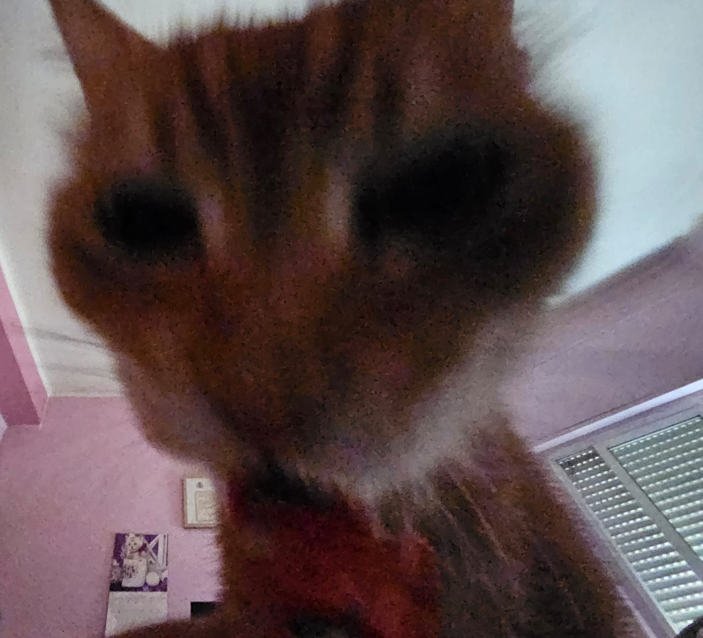
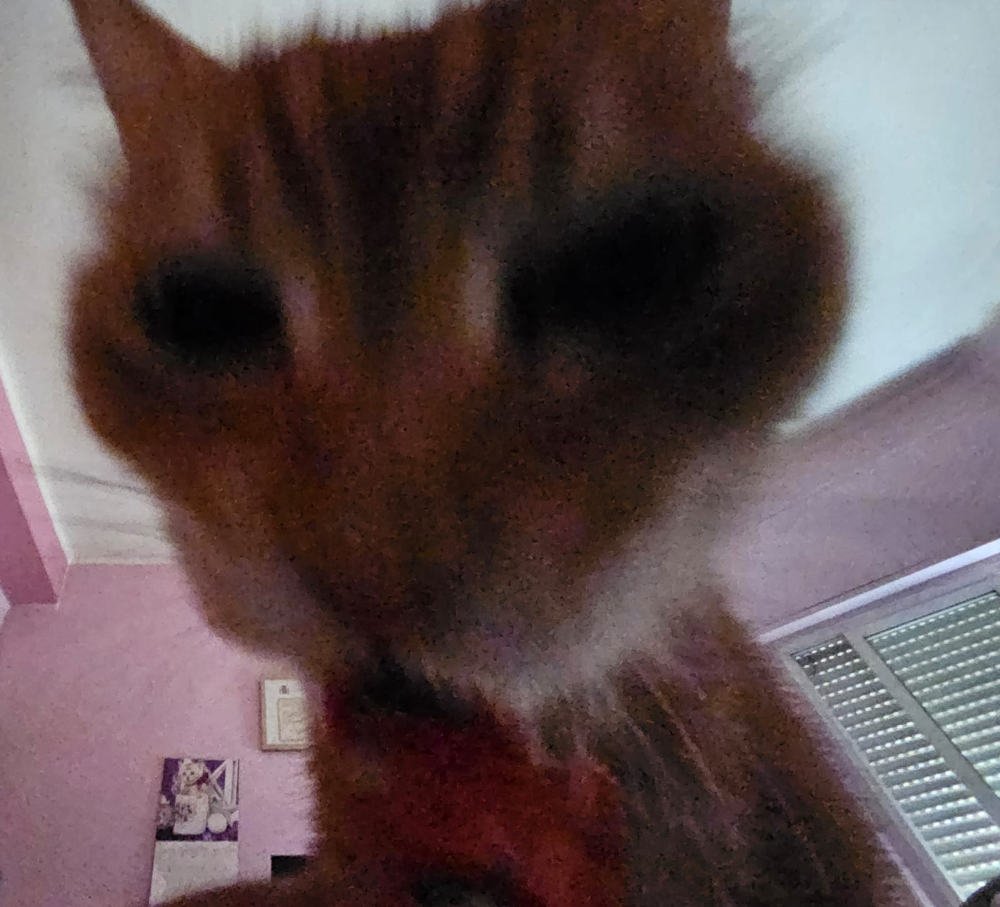
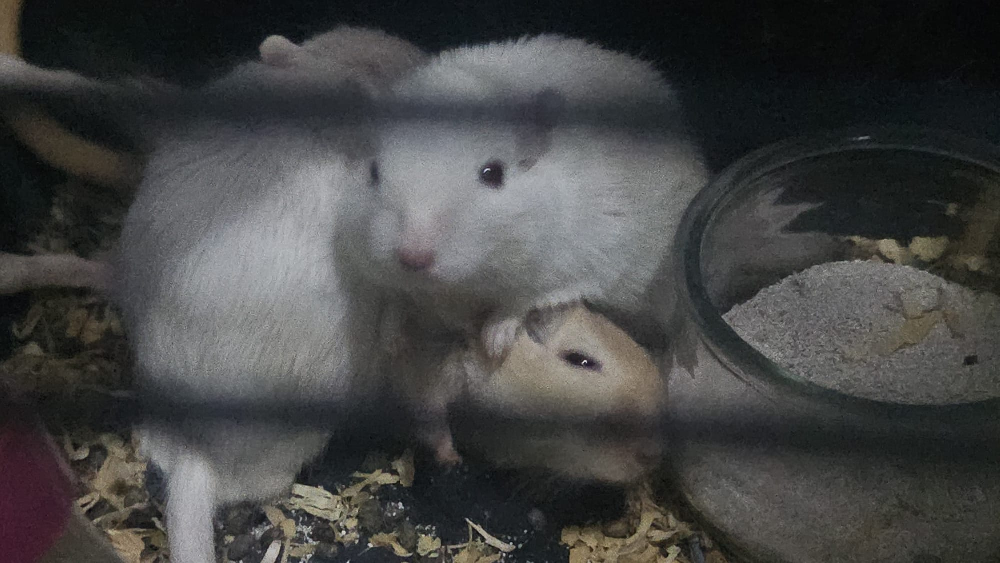
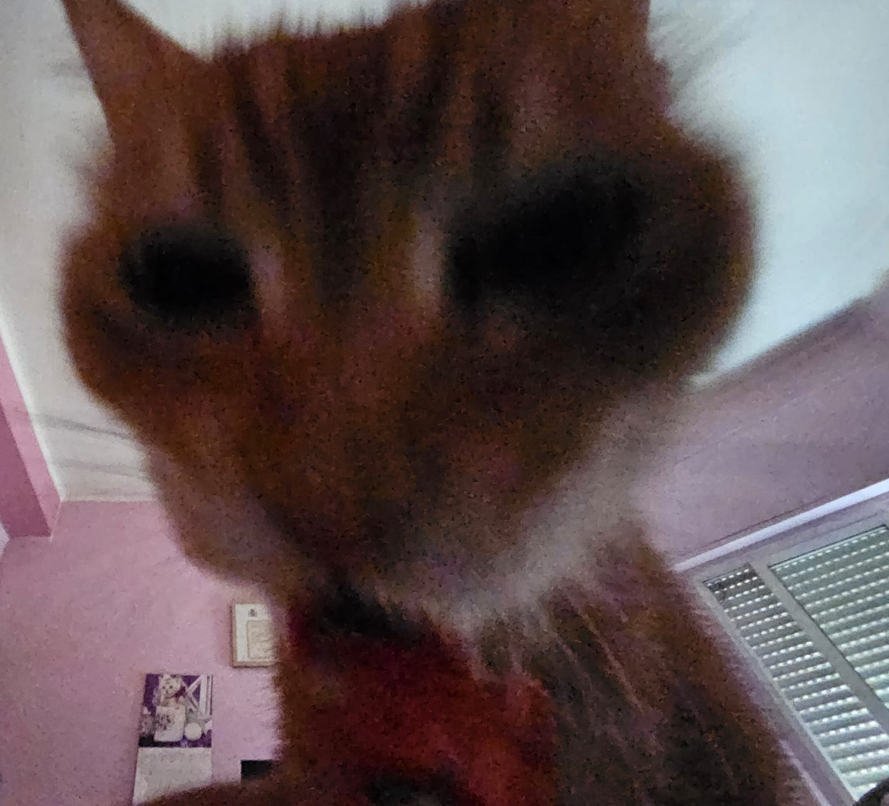
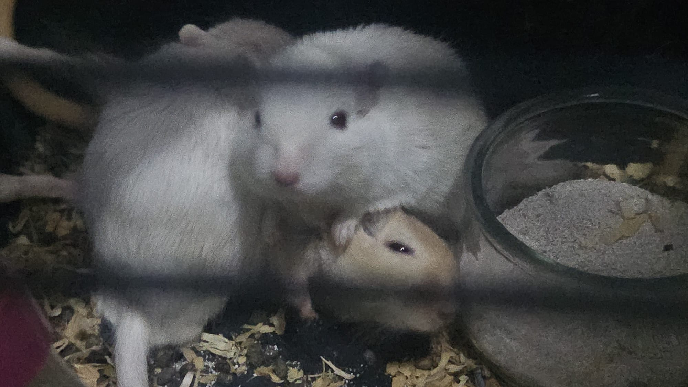
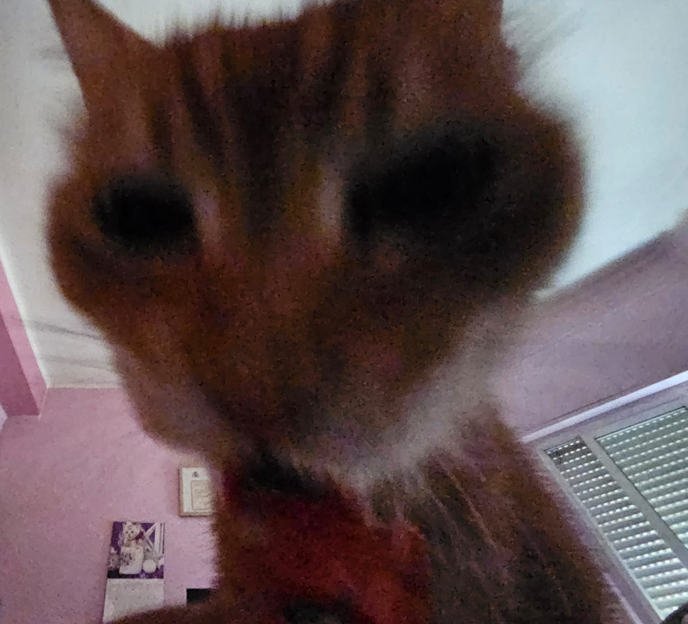

Felices 19 años, pareciera ayer cuando veíamos películas en Aceituna con todos, aunque en ese entonces no hablábamos mucho.
Sé que no compartimos una amistad tan profunda como la que puedes compartir con Antonio o con Mar, ya que pues claramente os conocéis hace mucho más tiempo.
Pero a día de hoy te considero una de mis mejores y únicas amistades.
Gracias por escucharme cuando lo necesito, y por esos momentos en los que me permites apoyarte de algún modo cuando tu lo necesitas.
Te deseo la mejor vida que puedas tener...
MUGRE
 





Conocida como Ana/Karime/A.Karime/Mugre/deblodimes o mi chancla, con 19 años recien cumplidos en agostito
Es una persona que a simple vista puede parecer con aura y nonchalant, pero en realidad es una persona muy timidilla y amable, siempre y cuando no seas un perro triple cuadra hijueputa con ella, o sus allegados.
Su twin es Usagi, su mugre es A.J alias deblodi/Antonio/ElGoat su color fav es el turquesa (BOOM) es medio alternativa, tiene hate a las cucarachas y derrama tés.
Es my duo migajera (somos unos migajers muy heavy), pero ojala pronto se cure
Sabe mucho de juegos o almenos de "Buenos" juegos, ella y Antonio en nada llegaran a challenger en el LoL o sino le dara el venazo y se volvera radiant en valo, ojito cuidao con mi chancla y mi tacon.
Tambien tiene otras aficiones como el manga(lectora), la musiquilla(como listener), tambien las series koreanas, al menos unos de los mangas que he visto que le gusten/le llamen la atencion es chainsawman, como ami, somos unos enfermos al dia. En cuanto a floklore coreano, pues las series que he visto que le gusten han sido del estilo del juego del calamar, alice in borderland, tema de venganza, o romance como el del psyquiatrico muejejejeje
Tema de musica pues tiene buenos gustos la verdad, ROJU deity, musica a piano, JPOP, TVGirl, Creep, y mucho mas, por eso pienso que mi amiga es goated.
Ya siendo serios
Esta es mi amiga
Y lo es, por todo lo escrito en esta pagina y lo que algun dia quedara por escribir, es una gran persona, una en la que se puede confiar, y una que muchas veces te puede animar, con su humor y su carisma
gracias por existir
sigue cumpliendo años hasta el infinito